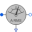
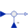

AIMS_Start_MultiPhaseStarting of multi phase asynchronous induction machine with slip rings |
|
Diagram
{kind=link}
Information
This information is part of the Modelica Standard Library maintained by the Modelica Association.
At start time tOn voltages are supplied to the
asynchronous induction machines with sliprings.
The two machine start from standstill, accelerating inertias against load torque quadratic dependent on speed,
using a starting resistance. At time tRheostat external rotor resistance is shortened, finally reaching nominal speed. Two equivalent machines with different numbers of phases are compared and their equal behavior is demonstrated.
Simulate for 1.5 seconds and plot (versus time):
aimcM|M3.tauElectrical: machine torqueaimsM|M3.wMechanical: machine speedfeedback.y: zero since difference of three phase current phasor and scaled multi phase current phasor are equal
Parameters (9)
| VsNominal |
Value: 100 Type: Voltage (V) Description: Nominal RMS voltage per phase |
|---|---|
| fNominal |
Value: aimsData.fsNominal Type: Frequency (Hz) Description: Nominal frequency |
| tOn |
Value: 0.1 Type: Time (s) Description: Start time of machine |
| RStart |
Value: 0.16 / aimsData.turnsRatio ^ 2 Type: Resistance (Ω) Description: Starting resistance |
| tRheostat |
Value: 1.0 Type: Time (s) Description: Time of shortening the rheostat |
| T_Load |
Value: 161.4 Type: Torque (N·m) Description: Nominal load torque |
| w_Load |
Value: Modelica.SIunits.Conversions.from_rpm(1440.45) Type: AngularVelocity (rad/s) Description: Nominal load speed |
| J_Load |
Value: 0.29 Type: Inertia (kg·m²) Description: Load inertia |
| aimsData |
Value: Type: AIM_SlipRingData |
Components (25)
| terminalBoxM |
Type: TerminalBox |
|
|---|---|---|
| terminalBox3 |
Type: TerminalBox |
|
| aimsM |
Type: AIM_SlipRing |
|
| aims3 |
Type: AIM_SlipRing |
|
| rheostatM |
Type: SwitchedRheostat |
|
| rheostat3 |
Type: SwitchedRheostat |
|
| loadInertiaM |
Type: Inertia |
|
| loadInertia3 |
Type: Inertia |
|
| quadraticLoadTorqueM | ||
| quadraticLoadTorque3 | ||
| aimsData |
Type: AIM_SlipRingData |
|
| groundM |
Type: Ground |
|
| starM |
Type: Star |
|
| sineVoltageM |
Type: SineVoltage |
|
| idealCloserM |
Type: IdealClosingSwitch |
|
| booleanStepM |
Type: BooleanStep[m] |
|
| currentRMSsensorM |
Type: CurrentQuasiRMSSensor |
|
| ground3 |
Type: Ground |
|
| star3 |
Type: Star |
|
| sineVoltage3 |
Type: SineVoltage |
|
| idealCloser3 |
Type: IdealClosingSwitch |
|
| booleanStep3 |
Type: BooleanStep[m3] |
|
|  | currentRMSsensor3 |
Type: CurrentQuasiRMSSensor |
| gain |
Type: Gain |
|
|  | feedback |
Type: Feedback |